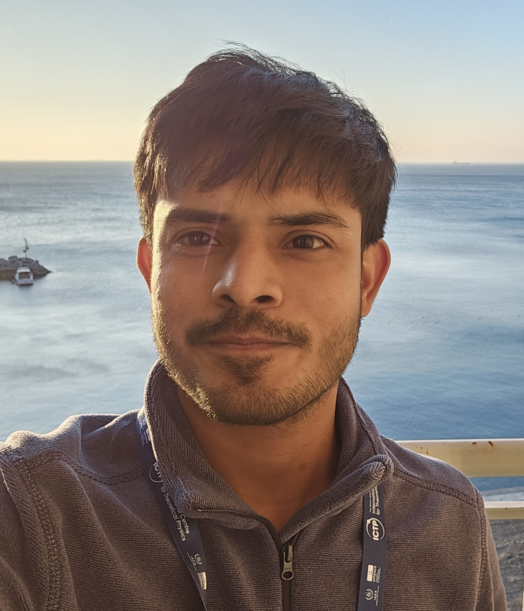

Manish Patel
PhD Scholar in Physics
Institute of Physics, Bhubaneswar
Homi Bhabha National Institute, Mumbai

I work in nonequilibrium statistical physics, with a focus on the stochastic dynamics and thermodynamics of active matter. My research combines analytical approaches and computational simulations to investigate transport, fluctuations, interactions, and dynamical transitions in active systems.
Research
My research focuses on understanding emergent dynamics and nonequilibrium phenomena in active and stochastic systems. Current interests include active matter, stochastic thermodynamics, and biological systems.
01 · Active Matter
Dynamics and transport of active Brownian particles, active chains, and interacting active systems, with emphasis on activity-induced transitions and anomalous transport.
02 · Stochastic Dynamics
Stochastic processes, resetting, fluctuations, and inertial effects in nonequilibrium systems, with particular interest in exact analytical results.
03 · Nonequilibrium Physics
Transport, entropy production, fluctuation relations, and effective interactions in systems driven away from thermal equilibrium.
04 · Biological Physics
Applying theoretical and computational approaches to biological systems, with an interest in cell and tissue dynamics and close connections between models and experiments.
Publications
Curriculum Vitae
A detailed overview of my academic background, research experience, publications, and other professional activities is available in my CV.
View CVContact
- Email: manish.patel@iopb.res.in
- Institute: Institute of Physics, Bhubaneswar
- Affiliation: Homi Bhabha National Institute, Mumbai